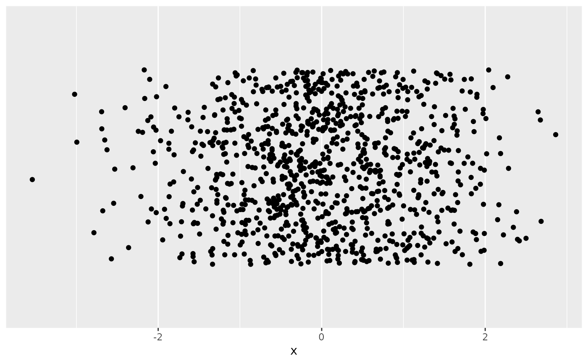
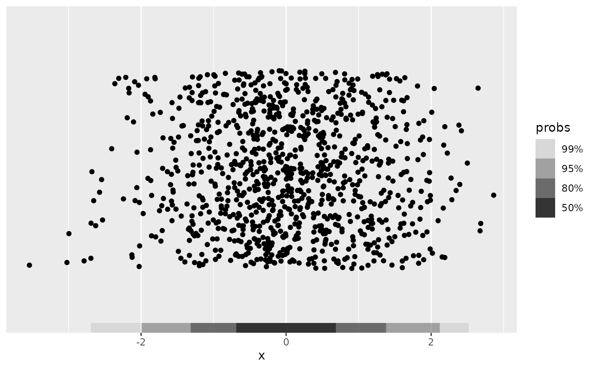
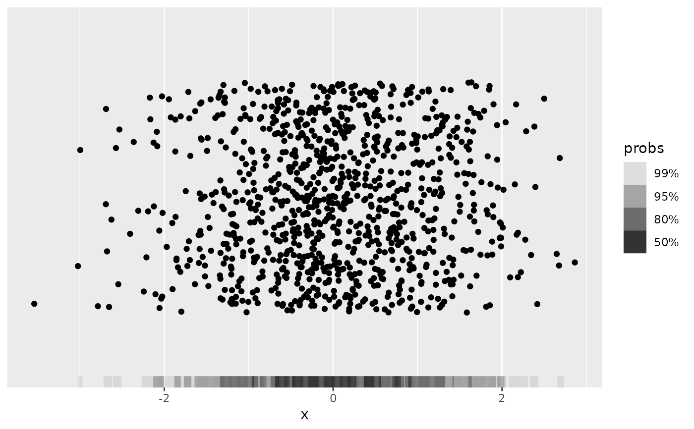

Function used to specify univariate frequency polygon density estimator
for get_hdr_1d() and layer functions (e.g. geom_hdr_rug()).
Details
For more details on the use and implementation of the method_*_1d() functions,
see vignette("method", "ggdensity").
Examples
df <- data.frame(x = rnorm(1e3))
# Strip chart to visualize 1-d data
p <- ggplot(df, aes(x)) +
geom_jitter(aes(y = 0), width = 0, height = 2) +
scale_y_continuous(name = NULL, breaks = NULL) +
coord_cartesian(ylim = c(-3, 3))
p

p + geom_hdr_rug(method = method_freqpoly_1d())

# The resolution of the frequency polygon estimator can be set via `bins`
p + geom_hdr_rug(method = method_freqpoly_1d(bins = 100))

# Can also be used with `get_hdr_1d()` for numerical summary of HDRs
res <- get_hdr_1d(df$x, method = method_freqpoly_1d())
str(res)
#> List of 3
#> $ df_est:'data.frame': 512 obs. of 4 variables:
#> ..$ x : num [1:512] -3.54 -3.53 -3.51 -3.5 -3.49 ...
#> ..$ fhat : num [1:512] 0 0 0 0 0 0 0 0 0 0 ...
#> ..$ fhat_discretized: num [1:512] 0 0 0 0 0 0 0 0 0 0 ...
#> ..$ hdr : num [1:512] 1 1 1 1 1 1 1 1 1 1 ...
#> $ breaks: Named num [1:5] 0.00828 0.0213 0.06487 0.10445 Inf
#> ..- attr(*, "names")= chr [1:5] "99%" "95%" "80%" "50%" ...
#> $ data :'data.frame': 1000 obs. of 2 variables:
#> ..$ x : num [1:1000] -1.9223 1.6197 0.5193 -0.0558 0.6964 ...
#> ..$ hdr_membership: num [1:1000] 0.95 0.95 0.5 0.5 0.8 0.5 0.8 0.99 0.5 0.5 ...